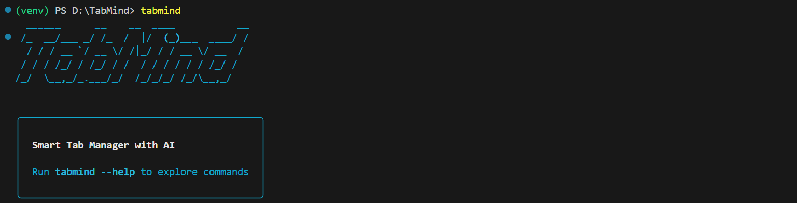

Stop hoarding tabs. Start finishing tasks.
View on GitHub
pip install tabmind
Store URLs along with the reason you saved them.
Automatically logs the date and time.
Generates smart prompts using GitHub Copilot CLI.
Built for developers who live in the terminal.
